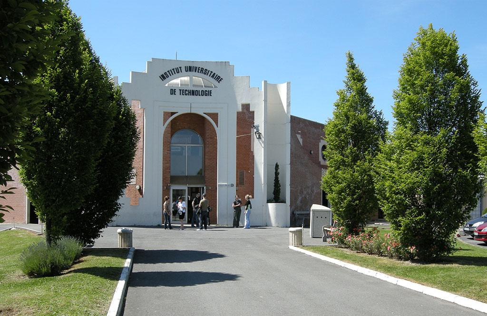

University Institutes of Computer Science Technology

The University Institutes of Technology are spread all over the French territory and are at the number of 115 wich ensures a strong anchoring in the local and regional economic environment Les Instituts Universitaires de Technologie sont répartis sur tout le territoire Français et sont au
Meetings between department heads of IUTs ensure national consistency of teaching.
The IUT has a quality of university education recognized and acclaimed by companies for more than 40 years, through the implementation of programs adapted to the professional reality and the creation of diplomas responding to the emergence of new professions.
Meetings between department heads of IUTs ensure national consistency of teaching.
The IUT has a quality of university education recognized and acclaimed by companies for more than 40 years, through the implementation of programs adapted to the professional reality and the creation of diplomas responding to the emergence of new professions.
Training covering most sectors (secondary and tertiary) and offering the collaboration of professionals make the strength and success of IUTs, and allow students to find a job within 6 months of graduation.
This diversification of diplomas and training leads to the implementation of different teaching methods, which are thus suitable for a larger number of students and professionals wishing to resume studies or for do a validation of experience (VAE).
In addition, IUTs, in partnership with foreign universities, offer international study prosecution and internships.

Learn more: